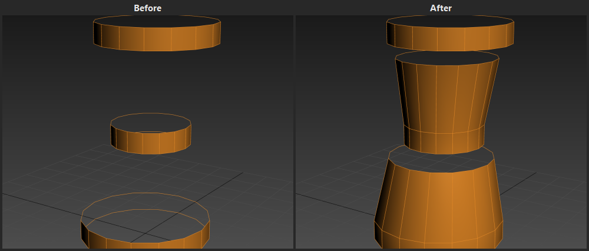

Loft
Joins several loops one after another.
What it does
Loft works like Bridge but takes any number of loops and joins each to the next, like a surface drawn through a stack of rings. It has the same settings as Bridge, plus a Loop option.

How to use it
- Open an Editable Poly (or an Edit Poly modifier) in the Modify panel and go to a sub-object level. Select three or more loops.
- Right-click in the viewport and choose LoopTools9000, then the tool. The submenu is the first item in the lower-left part of the menu, and only shows at sub-object level.
- The tool runs at once with the settings you used last, and a settings box opens in the viewport. Change a setting and the result updates live.
- Press OK to keep it, Cancel to go back to the original shape, or Apply to keep it and run the tool again on top of the result.
Options
| Option | What it does |
|---|---|
| Segments | How many rows of faces each strip has. 0 lets the tool decide. |
| Min width % | The smallest width a segment may have, as a share of the loop's size. |
| Interpolation | Cubic follows a smooth curve through the loops. Linear goes straight. |
| Strength | How strongly the surface bends along the curve. |
| Remove faces | Removes the selected faces between the loops (on by default). |
| Loop | Also joins the last loop back to the first. |
| Twist | Turns the connection round the loop by this many vertices. |
| Reverse | Joins the loops in the opposite direction. |
Good to know
- Loop is only in Loft's box, not in Bridge's.
- Keeping the result is one undo step.
- Your settings are remembered for next time.
- It works on Editable Poly and on the Edit Poly modifier.